14 sheets · landscape, “fit to page”, the same settings as your book
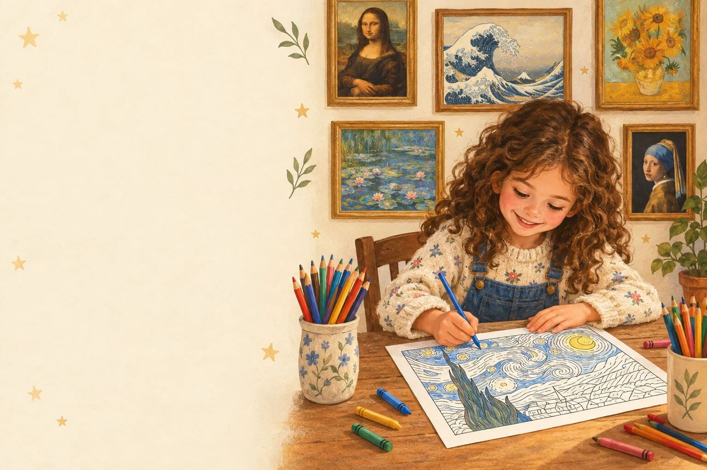
My
Art Book
100 masterpieces to color
A gift for a little artist
This book belongs to
I am years old.
I started this book on
My favorite color is
color it here
My artist signature
Every great painter signs their work. Practice yours here!
A gift for a little artist
For __________
With love,
Date:
1 · Middle Ages and Renaissance
1
Middle Ages and Renaissance
Sheets 1–12 · c. 1297 to 1515
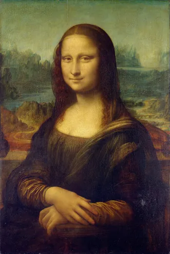
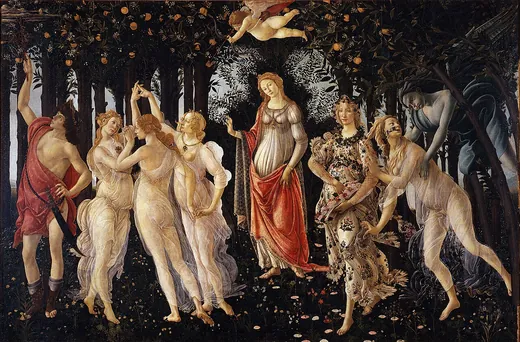
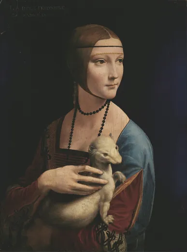
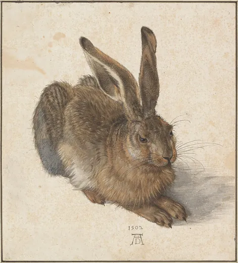
1Saint Francis Preaching to the BirdsGiotto
2The Flight into EgyptGiotto
3The Adoration of the MagiGiotto
4The AnnunciationFra Angelico
5The Baptism of ChristPiero della Francesca
6The AnnunciationLeonardo da Vinci
7PrimaveraSandro Botticelli
8The Delivery of the KeysPerugino
9Lady with an ErmineLeonardo da Vinci
10Young HareAlbrecht Dürer
11Mona LisaLeonardo da Vinci
12RhinocerosAlbrecht Dürer
2 · Masters of the 16th and 17th centuries
2
Masters of the 16th and 17th centuries
Sheets 13–22 · 1548 to c. 1665
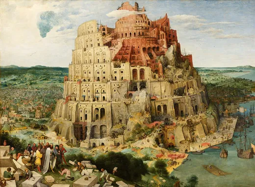
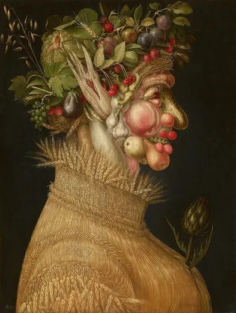
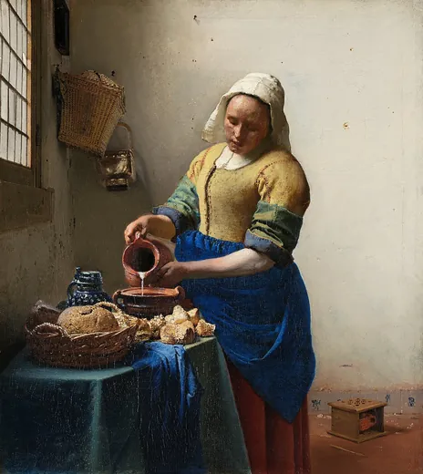
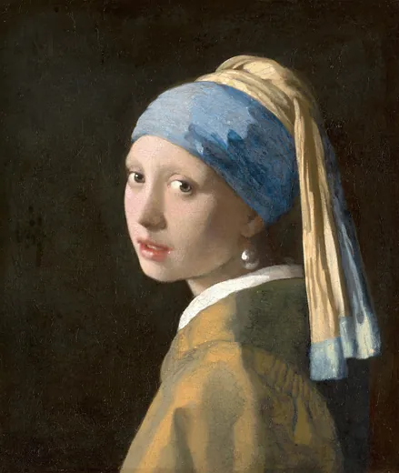
13Charles V at MühlbergTitian
14The Tower of BabelPieter Bruegel the Elder
15The Wedding at CanaPaolo Veronese
16The Hunters in the SnowPieter Bruegel the Elder
17SummerGiuseppe Arcimboldo
18Basket of FruitCaravaggio
19Winter Landscape with Ice SkatersHendrick Avercamp
20The MilkmaidJohannes Vermeer
21The Courtyard of a House in DelftPieter de Hooch
22Girl with a Pearl EarringJohannes Vermeer
3 · Venice, London and the Romantics
3
Venice, London and the Romantics
Sheets 23–33 · c. 1730 to 1821
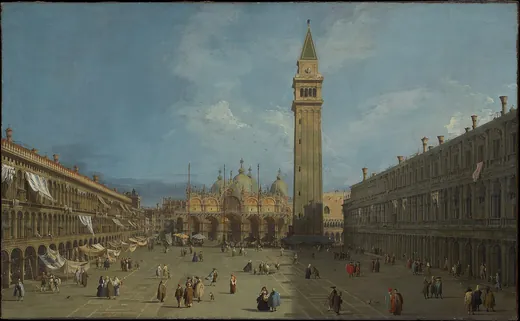
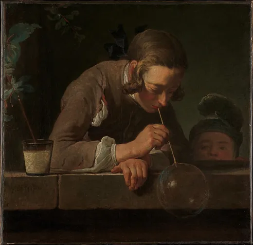
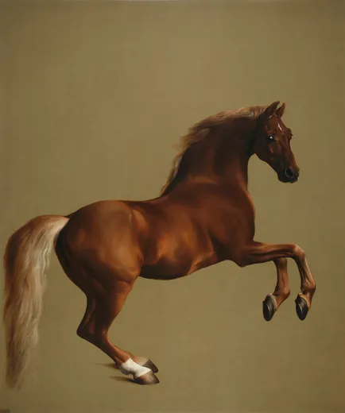
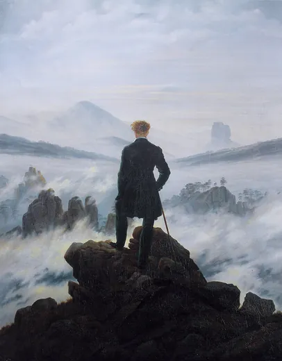
23Piazza San MarcoCanaletto
24The Return of the BucentaurCanaletto
25The Grand Canal and the SaluteCanaletto
26Soap BubblesJean-Siméon Chardin
27The House of CardsJean-Siméon Chardin
28A Regatta on the Grand CanalCanaletto
29The Thames in LondonCanaletto
30WhistlejacketGeorge Stubbs
31The Blue BoyThomas Gainsborough
32Wanderer above the Sea of FogCaspar David Friedrich
33The Hay WainJohn Constable
4 · Great landscapes of the 19th century
4
Great landscapes of the 19th century
Sheets 34–49 · c. 1831 to 1869
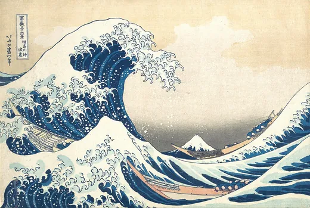
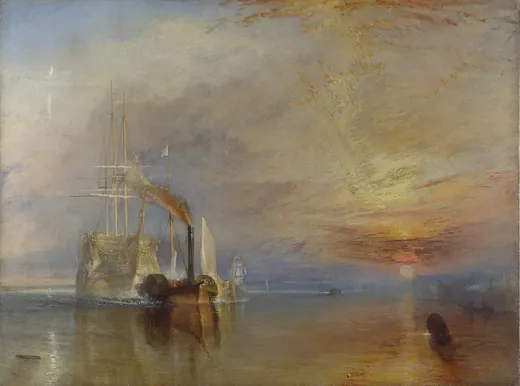
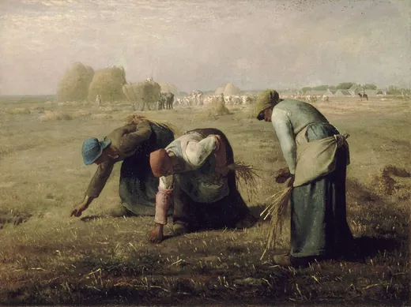
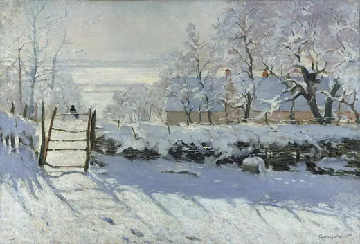
34Red FujiKatsushika Hokusai
35The Great WaveKatsushika Hokusai
36The OxbowThomas Cole
37The Fighting TemeraireJ. M. W. Turner
38Rain, Steam and SpeedJ. M. W. Turner
39The Monarch of the GlenEdwin Landseer
40The MeetingGustave Courbet
41Sudden Shower over Shin-Ohashi BridgeUtagawa Hiroshige
42Plum Park in KameidoUtagawa Hiroshige
43The GleanersJean-François Millet
44NiagaraFrederic Edwin Church
45Souvenir of MortefontaineCamille Corot
46Beach at TrouvilleEugène Boudin
47The FiferÉdouard Manet
48Among the Sierra Nevada, CaliforniaAlbert Bierstadt
49The MagpieClaude Monet
5 · The Impressionists
5
The Impressionists
Sheets 50–66 · 1871 to 1886
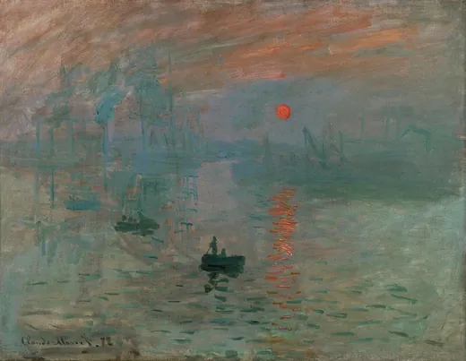
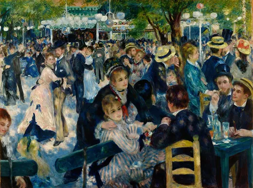
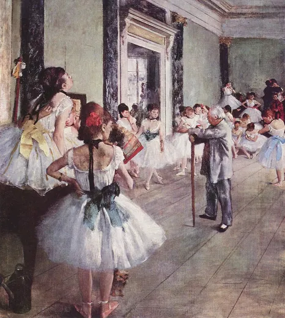
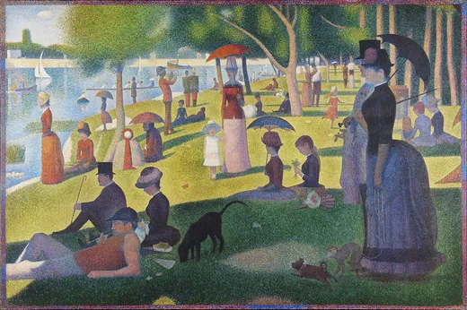
50Whistler's MotherJames McNeill Whistler
51Impression, SunriseClaude Monet
52The CradleBerthe Morisot
53Snap the WhipWinslow Homer
54PoppiesClaude Monet
55The Dance ClassEdgar Degas
56The Butterfly HuntBerthe Morisot
57Woman with a ParasolClaude Monet
58Dance at Le Moulin de la GalettePierre-Auguste Renoir
59Flood at Port-MarlyAlfred Sisley
60Paris Street; Rainy DayGustave Caillebotte
61Little Girl in a Blue ArmchairMary Cassatt
62The Golden StairsEdward Burne-Jones
63Luncheon of the Boating PartyPierre-Auguste Renoir
64A Sunday on La Grande JatteGeorges Seurat
65The Young ShepherdessWilliam Bouguereau
66Carnation, Lily, Lily, RoseJohn Singer Sargent
6 · Van Gogh and his friends
6
Van Gogh and his friends
Sheets 67–85 · 1888 to 1906
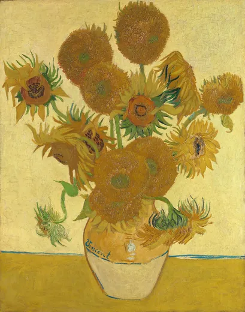
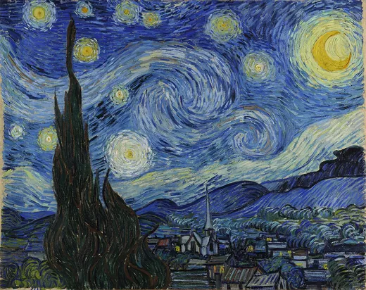
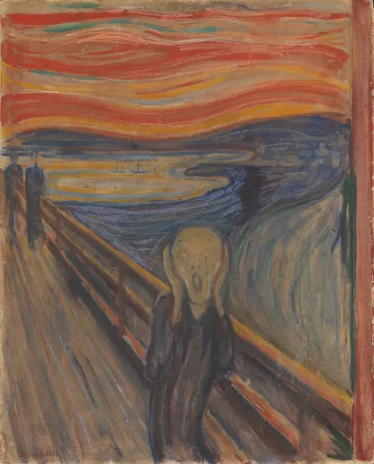
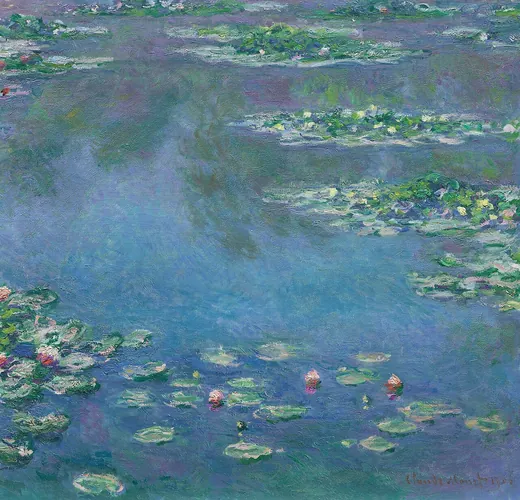
67SunflowersVincent van Gogh
68Cafe Terrace at NightVincent van Gogh
69The BedroomVincent van Gogh
70IrisesVincent van Gogh
71Wheat Field with CypressesVincent van Gogh
72The Starry NightVincent van Gogh
73Almond BlossomsVincent van Gogh
74HaystacksClaude Monet
75Surprised!Henri Rousseau
76The CircusGeorges Seurat
77The ScreamEdvard Munch
78The Child's BathMary Cassatt
79Breakfast under the Big BirchCarl Larsson
80Boulevard Montmartre at NightCamille Pissarro
81The Japanese FootbridgeClaude Monet
82Apples and OrangesPaul Cézanne
83The Port of Saint-TropezPaul Signac
84Mont Sainte-VictoirePaul Cézanne
85Water LiliesClaude Monet
7 · Modern art
7
Modern art
Sheets 86–100 · 1909 to 1953
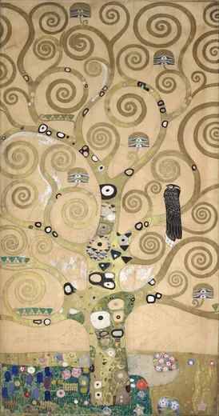
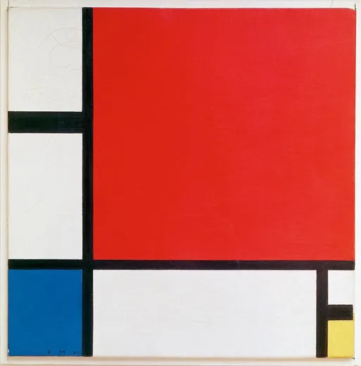
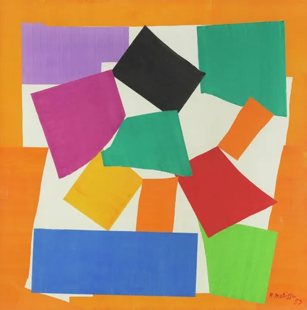
86The Tree of LifeGustav Klimt
87Walk on the BeachJoaquín Sorolla
88The Large Blue HorsesFranz Marc
89The Yellow CowFranz Marc
90Blue Horse IFranz Marc
91GoldfishHenri Matisse
92Two Cats, Blue and YellowFranz Marc
93SenecioPaul Klee
94Composition VIIIWassily Kandinsky
95Yellow-Red-BlueWassily Kandinsky
96Castle and SunPaul Klee
97Cat and BirdPaul Klee
98Composition with Red, Yellow and BluePiet Mondrian
99Broadway Boogie WoogiePiet Mondrian
100The SnailHenri Matisse
Binder spines
Spine for a 1-inch binder · cut along the dotted line
My Art Book100 Masterpieces to Color
Spine for a 1½-inch binder · cut along the dotted line
My Art Book100 Masterpieces to Color
Spine for a 2-inch binder · cut along the dotted line
My Art Book100 Masterpieces to Color
Gift tags · cut out, punch the hole and tie with a ribbon
Merry Christmas!
To:
From:
Merry Christmas!
To:
From:
A gift for a little artist
To:
From:
A gift for a little artist
To:
From:
The end… for now!
My Art Book
100 masterpieces · 60 artists · from Giotto to Matisse
Started on
Finished on
My favorite masterpiece:
How to make your art book
1
Print
Print your Little Artists book and this kit with the same settings: landscape, “fit to page”. Thicker paper (cardstock) makes the cover and dividers last longer.
2
Choose how to bind it
A 1-inch 3-ring binder holds the whole book. You can also use a 3-hole punch and a folder with brass fasteners, or ask a copy shop to spiral-bind it.
3
Put it in order
Front cover · “This book belongs to” · the dedication page if it is a gift · then each divider in front of its sheets (1 to 7) · back cover at the end.
4
Finish the binder
Slide the cover into the clear front pocket and cut the spine that fits your binder.
5
Keep it growing
Color the sheets in any order and put each one back in its place. One day, the whole book is done!